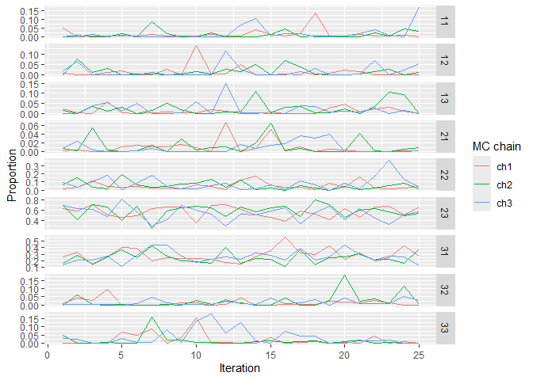

MAGMA is a slowing moving but powerful model that combine mark and age information with genetic mixture analysis. Mainly, MAGMA estimates two sets of parameters: stock and age. A composition of the two, information that is often required for run reconstruction models, is simply the product of these two sets of parameters. After all age/stock compositions in other strata are calculated in the same fashion, they are multiplied by the harvest proportions of their corresponding strata and summed up to get a weighted average age/stock composition.
Installation
You can install the development version of magma.gsi from GitHub with:
# install.packages("devtools")
devtools::install_github("boppingshoe/magma.gsi", build_vignettes = TRUE)Example
Once you have the data sets up at a designated directory, you can compile the input object:
library(magma.gsi)
wd <- getwd() # path to data folder
magma_data <- magmatize_data(wd = paste0(wd, "/vignettes"), save_data = FALSE)
#> Compiling input data, may take a minute or two...
#> FAKE is the fishery identified in the mixture.RData
#> No missing hatcheries
#> Time difference of 5.265977 secsRun the model:
magma_out <- magmatize_mdl(magma_data, nreps = 50, nburn = 25, thin = 1, nchains = 3)
#> Running model... and good things come to High Class In A Fur Coat!
#> Time difference of 1.02392 secs
#> 2024-10-08 15:09:24.414875Summarize the results:
magma_summ <- magmatize_summ(ma_out = magma_out, ma_dat = magma_data, summ_level = "district")
#> Preparing output (patience grasshopper...)
#> Time difference of 0.3430619 secs
#> 2024-10-08 15:09:24.774506
magma_summ$age_summ[1]
#> $D1_Koyukuk
#> # A tibble: 9 × 10
#> group age mean median sd ci.05 ci.95 p0 GR n_eff
#> <chr> <fct> <dbl> <dbl> <dbl> <dbl> <dbl> <dbl> <dbl> <dbl>
#> 1 Koyukuk 11 0.0161 0.00441 0.0303 0.00000957 0.0747 0.107 1.05 75
#> 2 Koyukuk 12 0.0165 0.00469 0.0267 0.0000130 0.0700 0.12 1.13 75
#> 3 Koyukuk 13 0.0189 0.00717 0.0282 0.0000248 0.0679 0.173 1.01 75
#> 4 Koyukuk 21 0.00993 0.00323 0.0154 0.00000238 0.0446 0.2 1.07 42.2
#> 5 Koyukuk 22 0.0639 0.0471 0.0603 0.00582 0.177 0 1.02 75
#> 6 Koyukuk 23 0.569 0.585 0.123 0.335 0.714 0 1.02 93.8
#> 7 Koyukuk 31 0.265 0.256 0.0923 0.134 0.431 0 1.02 93.5
#> 8 Koyukuk 32 0.0174 0.00604 0.0286 0.00000185 0.0544 0.133 1.03 75
#> 9 Koyukuk 33 0.0240 0.00626 0.0406 0.0000675 0.128 0.147 1.03 57.1There’s a function in the package to make trace plots and inspect mixing of chains.
magmatize_tr_plot(magma_summ$age_prop[[1]])
To see more examples on using magma.gsi, you can call the manual using vignette("magma-vignette", package = "magma.gsi") after you installed magma.gsi.